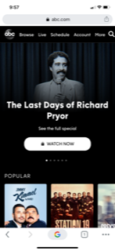

Visual Hierarchy
facebook.com
Facebook uses visual hierachy by making the "Log In" button stand out. It will what is pressed the most. Next, they changed the color of the "Create New Account" button so it grabs your attention next. The "Forgot Your Password" link is significantly smaller, but its placement makes it easy to find if you need it. There are other links at the bottom of that page, but because of size and placement, you almost don't notice they are there. This was intentional. Not many people will use these links.
Hick's Law
overstock.com
Overstock uses Hick's Law. They have so many choices that it's overwhelming. To prevent this, on their homepage they just give you links to deals so you'll have to start with their menu. If you click the menu, they have an intuitive filter system to help you narrow your options.
Contrast
abc.com
ABC News was so bold and chose a black background! To keep the contrast, they used white text. They also use images of their shows that contrast nicely against the black. They also use a lot of negative space, which helps the black background not feel overwhelming.